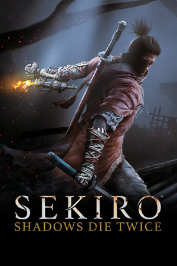
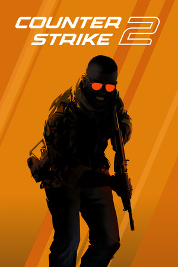
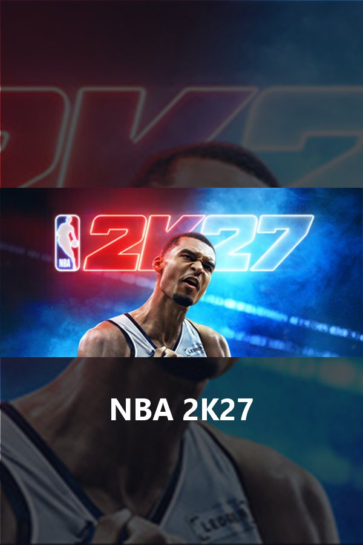

Студент, який пише код удень і грає у шутери та соулслайки ввечері. Тут зібрано ігри, у які я граю або хочу пройти.
Про мене
Мене звати Євгеній Река, я студент групи ІН-42/2 факультету електроніки та інформаційних технологій Сумського державного університету, спеціальність «Інформатика». Цікавлюся веброзробкою та Java, а у вільний час граю у відеоігри.
Найбільше люблю змагальні шутери, де вирішують реакція та командна гра, і складні ігри від FromSoftware, де кожен бос — окремий іспит.
Мої хобі
Змагальні шутери: Counter-Strike 2 та PUBG.
Соулслайки та ігри з високою складністю.
Баскетбол — і на майданчику, і в NBA 2K.
Перегляд стрімів і кіберспортивних турнірів.
Каталог відеоігор
Фільтри
Elden Ring
Жанр
Соулслайк
Платформи
PC, PlayStation 4/5, Xbox One, Xbox Series X|S
Дата виходу
Мій час у грі
100 год
Статус
Пройдено
Відкритий світ від FromSoftware за участі Джорджа Мартіна: Межигір'я, десятки необов'язкових босів і повна свобода в тому, куди йти далі.
Sekiro: Shadows Die Twice

Жанр
Соулслайк
Платформи
PC, PlayStation 4, Xbox One
Дата виходу
Мій час у грі
55 год
Статус
Пройдено
Японія епохи Сенґоку, однорукий шинобі та бойова система, побудована на парируванні: тут не можна сховатися за щитом — лише відбивати удари в ритм.
Ghost of Tsushima
Жанр
Екшн-пригоди
Платформи
PlayStation 4/5, PC
Дата виходу
Мій час у грі
40 год
Статус
Пройдено
Самурай Дзін Сакай захищає острів Цусіма від монгольського вторгнення й обирає між кодексом честі та шляхом примари.
Counter-Strike 2

Жанр
Шутер
Платформи
PC
Дата виходу
Мій час у грі
≈ 4000 год
Статус
Не пройдено
Командний тактичний шутер на рушії Source 2: дві команди, закладання бомби, економіка раундів і нескінченне відточування стрільби.
PUBG: Battlegrounds
Жанр
Шутер
Платформи
PC, PlayStation 4/5, Xbox One, Xbox Series X|S
Дата виходу
Мій час у грі
770 год
Статус
Не пройдено
Королівська битва на сто гравців: висадка з літака, пошук спорядження, зона, що звужується, і лише один переможець.
NBA 2K27

Жанр
Спорт
Платформи
PC, PlayStation 5, Xbox Series X|S, Nintendo Switch 2
Дата виходу
Мій час у грі
0 год (ще не грав)
Статус
Не пройдено
Баскетбольний симулятор із режимами MyCAREER, MyTEAM і MyNBA та спільним Містом для гравців НБА й ВНБА.